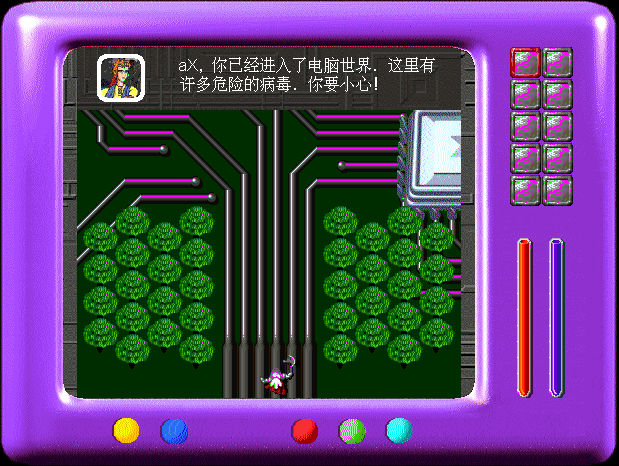
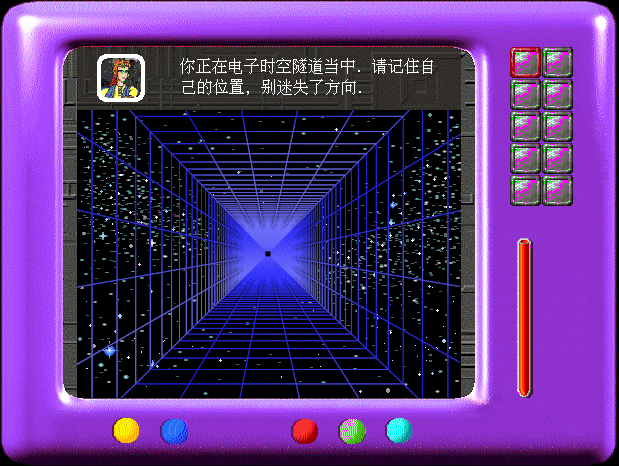

名稱：病毒大戰 (Jim & aX，簡中／英文版) 簡介：金盤電子1995年出品的動作冒險遊戲 [待補]。

保護：光碟 限制：遊戲程式是16位元，只能在Win31/9x/XP系統上執行。 操作： 方向鍵 = 移動 Space = 攻擊 Alt = 離開芯片 Ctrl = 使用法寶 PgUp/PgDn = 選擇法寶 F1 = 按鍵說明 F2 = 存檔 F3 = 讀檔 F4 = 重新開始 Pause = 暫停遊戲 Ins = 吉姆的提示 Alt-F4 = 離開遊戲